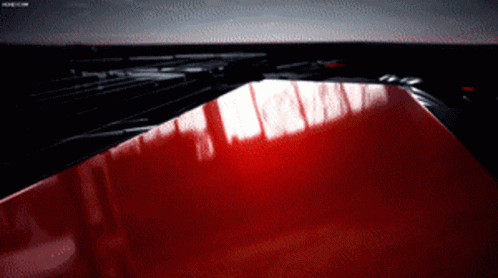

FORMULA 1
MENU


El Campeonato Mundial de Formula 1 de la FIA,
mas conocido como Formula 1, F1 o Formula Uno, es la principal competicion de automovilismo internacional
y el campeonato de deportes de motor mas popular y prestigioso del mundo.
A cada carrera se le denomina Gran Premio y el torneo que las agrupa es el Campeonato Mundial de Formula 1.
La mayoria de los circuitos de carreras donde se celebran los Grandes Premios son autodromos,
aunque tambien se utilizan circuitos callejeros y anteriormente se utilizaron circuitos ruteros.
El inicio de la Formula 1 moderna se remonta al anio 1950, en el que participaron escuderias como Ferrari,
Alfa Romeo y Maserati. Algunas fueron reemplazadas por otras nuevas como McLaren, Williams, Red Bull y
otras que volvieron como Mercedes se han alzado varias veces con el Campeonato Mundial de Constructores.
Por su parte, los pilotos deben contar con la superlicencia de la FIA para competir, que se obtiene por los
resultados en otros campeonatos.
